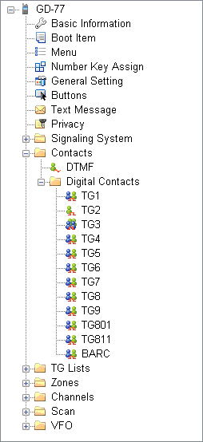

OpenGD77 / OpenDM1801 / OpenRD5R User Guide
OpenGD77 / OpenGD77S / OpenDM1801 / OpenRD5R is a work-in-progress, so is this User Guide. Last update was on 20th April 2020. For documentation ToDo (including incremental changes), please refer to https://github.com/jangelor/OpenGD77/wiki/Documentation-ToDo . For latest discussions, please refer to the development and community forum at https://opengd77.com .
- OpenGD77 / OpenDM1801 / OpenRD5R User Guide
- Introduction
- Installation
- Variations between different supported radios
- Main screens (VFO and Channel screens)
- Changing between VFO and Channel
- Changing Timeslot in DMR mode
- Controlling Tx power
- Signal strength bar graph
- Channel screen specific functionality
- Displaying the channel Frequency
- Displaying FM specific channel infromation
- Listening on a repeater input
- DMR specific functionality (VFO and Channel screens)
- Timeslot selection
- DMR ID callsign and name display
- Talker Alias display
- Talkgroup selection from the Rx Group list
- Assignment of Timeslot to Digital Contact TalkGroup
- TalkGroup displayed in inverse video
- Manual TalkGroup number entry
- Private Call number entry
- Digital Contact selection
- Station DMR ID number entry
- FM specific functionality (VFO and Channel screens)
- VFO specific functionality
- Transmitting
- Scanning
- Other screens
- The control keys and buttons
- The Menu System
- Main Menu
- Making and receiving DMR Private Calls
- Hotspot mode
- Programming Channels and Talkgroups for use with the firmware

Introduction
This user guide is a work in progress as is the OpenGD77 / OpenGD77S / OpenDM1801 / OpenRD5R and OpenGD77S_HS firmware. If you find any errors or omissions please let me know so they can be corrected.
Due to the rapid pace of development some of photos of screens are now out of date and not completely accurate.
The photos will be updated when the firmware in a particular area stabilises
The intention of the project is to create a fully featured non-commercial firmware that entirely replaces the Radioddity GD-77, and Baofeng DM-1801 factory firmware. This firmware is specifically designed for Amateur Radio use, and has features not available in the official firmware.
Note: The firmware is still under development and there are some key areas of functionality which have yet to be written.
DMR Tier 2 Tx and Rx voice transmissions works.
Text messaging and other similar features are currently not supported, but are on the To Do list.
FM RX and TX transmission works.
This includes repeater operation using CTCSS on both TX and RX.
For a full list of current bugs, and proposed enhancements see https://github.com/rogerclarkmelbourne/opengd77/issues
Also, as far as possible the firmware is open source. This allows anyone to modify the firmware to suit their own individual needs, and also for peer review and improvement of the firmware source code.
Credits
The project was conceived by Kai DG4KLU, who developed the initial framework and all the FM and DMR TX and RX (Tier 1) functionality. Kai ceased actively participating in the project in June 2019.
At the time of writing Roger VK3KYY is now the lead developer, with assistance from Daniel F1RBM.
The Tier 2 functionality, User Interface, Display driver, Codeplug API, EEPROM memory API, Flash memory API, Hotspot mode and many other features were developed by Roger VK3KYY Other code sections were written or bug fixed by Daniel F1RBM, Alex DL4LEX, Colin G4EML and others.
This user guide was written by Roger VK3KYY based on work by Alister G0NEF. Additional edits by Angelo 4I1RAC and Bud W0RMT, and graphics by Thierry F1CXG (buttons) and Rafa EA3BIL (menu map).
Thanks to all the Beta Testers that provide detailed bug reports and user feedback, especially VK7ZCR, W1RHS and G4TSN
Download links and other resources
Firmware source code and binaries:
Latest version: https://github.com/rogerclarkmelbourne/OpenGD77/releases
OpenGD77 CPS with support new features like 80 channel zones: https://github.com/rogerclarkmelbourne/OpenGD77CPS/releases
OpenGD77Forum:
https://www.opengd77.com/
Installation
The firmware can be installed onto the
- Radioddity GD-77
- Radioddity GD-77S
- TYT MD-760
- Baofeng DM-1801
- Baofeng DM-860
- Baofeng RD-5R
using the firmware update tool provided by Radioddity, or Baofeng with their official firmware update packages. This can be downloaded from Radioddity’s website radioddity.com . See Radioddity’s documentation on how to use their firmware update tool.
Or using the FirmwareLoader.exe in the firmware release
Installation of the firmware is undertaken at the owners own risk, but the official firmware can usually be reloaded onto the radio if the user has problems with the firmware.
Note: The official Radioddity CPS PC software is not compatible with the firmware, and the “Community CPS” or the "OpenGD77 CPS" should be used instead. This can be downloaded from the link show in section 1.1 of this guide. This CPS must also be used for the Baofeng DM-1801
Variations between different supported radios
Not all the supported radios have the same number of buttons, or the same size screen, hence there are some differences when operating radios other than the Radioddity GD-77
- The Baofeng DM-1801 / DM-860 has a dedicated MR/VFO button, which is used to change between Channel and VFO mode, in place of pressing the Red menu key
- The Baofeng DM-1801 / DM-860 has a dedicated A/B button, which is used to change between VFO A and B, in place of pressing the quick menu via the Orange button on the top of the radio
- The Baofeng RD-5R / DM-5R does not have left or right arrow buttons, so the A/ button is used to replace the left arrow and the "Band" button is used to replace the right arrow
- The Baofeng RD-5R / DM-5R does not the Orange button, and its functionality has been similated by using a Long press on the orange coloured MR/VFO button
- The Baofeng RD-5R / DM-5R has 2 buttons on the side, but their position is different from the GD-77 and DM-1801. The button above the PTT is used as the "Black" button on the side of the GD-77, also know as button SK1. The button below the PTT is used as the Blue button, also know as SK2.
Main screens (VFO and Channel screens)
The firmware has 2 main screens. The VFO screen and the Channel screen. These are similar to the channel and VFO screens in the official firmware, except have additional functionality.
Initially after the firmware is installed, the VFO screen will be displayed.

The frequency used in the VFO for both Tx and Rx will be read from the “VFO A” settings of the codeplug.
On both the VFO and Channel screens, the mode (DMR or FM) is shown in the top left of the display, and the battery voltage percentage is shown in the top right of the display
In DMR mode the current TimeSlot is shown to the right of the “DMR” text e.g TimeSlot 2 "TS2", and the Colour Code e.g. “C1” is shown to the left of the battery percentage. When TimeSlot filtering is turned off, the TS1 or TS2 indicator is in inverse color.
The current Tx power is shown in the middle of the top of the screen (e.g., 750mW)
On the VFO screen, the TX and RX frequency are shown, as well as the TalkGroup when in DMR mode.
The arrow to the left of the R (receive frequency) indicates that the keypad up and down arrows and number entry keys will control the RX frequency.
The channel screen displays the same information in the top row, but displays the Channel name (in this example “Lee Hill”) as well as the Zone (“Home DMR”). In DMR mode the TalkGroup (in this case "ColoradoHD") will also be displayed

On both the VFO and Channel screens:
Press the Red menu button to toggle between the VFO and Channel screens
Note on radios like the Baofeng DM-1801 and RD-5R, press the MR/VFO button to toggle between Channel and VFO mode)
Press the Green menu key to enter the menu system
Press Function + Green for quick access to the Channel details screen, which can also be accessed via the menu system. Note: The VFO is actually a special type of channel; hence the Channel Details screen also works for the VFO.
Changing between VFO and Channel
Press the Function + Star key to toggle between FM and DMR mode on either the VFO or Channel screens.
Changing Timeslot in DMR mode
In DMR mode, pressing the Star key toggles between TimeSlot 1 and TimeSlot 2.
Controlling Tx power
Press Function + Right to increase the power. Press Function + Left to decrease the power. Power can be set to 50mW, 250mW, 500mW, 750mW, 1W, 2W, 3W, 4W, 5W and 5W++. Note: The power output will only be correct after the operator has calibrated their own radio, as these radios do not seem to have very accurate power calibration applied in the factory.
Signal strength bar graph
In both FM and DMR mode, the signal strength of the received signal is show as a bar graph across with width of the screen. 100% bar graph is approximately S9 +40 dB.
In DMR mode the signal meter will only be active when the DMR hardware detects a DMR signal.
In FM mode the signal meter should operate all the time.

Channel screen specific functionality
The Channel screen displays the current Channel number as well as the current zone.

Changing channels within the current zone
Pressing the Up or Down arrow keys changes channel in current zone, and the channel number in the zone will be displayed beside the zone name.
Changing zones
Pressing Function + Up arrow or Function + Down arrow changes to the next or previous zone, respectively.

Displaying the channel Frequency
Press and hold the Black button to display the Rx and Tx frequency in both DMR and FM modem
Displaying FM specific channel infromation
Press and hold the Black button to display FM specific information. CTCSS and squelch setting
Listening on a repeater input
Pressing the Black button and Blue button enables the radio to receive on the input to a repeater. This works on both DMR and FM repeaters. This also shows the channel information as described above.
Channel screen Quick Menu
Pressing the Orange button on the top of the radio in Channel mode displays the Quick Menu for the Channel screen. Note that in Quick Menu, the Orange button has the same function as the Green key, which confirms your current selection.
Note. The Baofeng RD-5R does not have an Orange button. On this radio press and hold the orange coloured MR/VFO button to enter the Quick menu
Copying a channel to VFO
Press the Orange button or Green key to copy the content of the current channel to the VFO.
Read the VFO into the current channel
Press the Orange button or Green key to confirm and save the updated channel to the codeplug memory. Red key to cancel.
Filter (DMR only)
Use the Right or Left arrows to select
- None (for no filtering, i.e. "promiscuous" mode).
- CC (filter by Colour Code).
- CC,TS (to filter by Colour Code and the selected timeslot),
- CC,TS,TG (to filter by Colour Code and the selected timeslot and also the selected Talkgroup)
- CC,TS,Ct (to filter by Colour Code and the selected timeslot and also only for contacts in the Digital Contacts in the codeplug)
- CC,TS,RxG (to filter by Colour Code and the selected timeslot and also only for the selected or manually entered Talkgroup, and the Talkgroups in the TG list / Rx Group list)
When timeslot filtering is disabled, the TS1 / TS2 indication at the top of the screen is displayed in inverse video. When Talkgroup filtering is enabled the DMR mode indication at the top of the screen is displayed in inverse video.

VFO Quick Menu
Pressing the Orange button on the top of the radio in VFO mode displays the Quick menu for the VFO screen. Currently this has five options.
Note. The Baofeng RD-5R does not have an Orange button. On this radio press and hold the orange coloured MR/VFO button to enter the Quick menu
VFO selection A or B
Pressing the Orange button twice while in VFO mode quickly toggles between VFO A and VFO B. On the Baofeng DM-1801 / DM-860, this function is contolled using the A/B button.
Exchange the TX and RX frequencies
This function essentially reverses the TX and RX frequencies. Press Green key or Orange button to confirm.
Copy the RX frequency to the TX frequency
Copies the RX frequency to the TX frequency. Press Green key or Orange button to confirm.
Copy TX frequency to the RX frequency
Copies the TX frequency to the RX frequency. Press Green key or Orange button to confirm.
Filter (DMR mode only)
This function is identical to the Filter described forChannel mode operation (above)
Tone Scan for CTCSS tone in FM
This scans for any CTCSS tone, and sets the VFO to these paramaters.
Press the Orange button or Green key to confirm the copy or Red key to cancel.

DMR specific functionality (VFO and Channel screens)
Timeslot selection
The Star key toggles between TimeSlot 1 and TimeSlot 2
DMR ID callsign and name display
When a DMR signal is received which uses the same Colour Code as selected for the VFO or Channel, the radio display will show the station’s Talkgroup and DMR ID

If the DMR ID is in the DMR ID database previously loaded into the radio, the callsign and name will be displayed.

Talker Alias display
If receiving a signal from the Brandmeister network, and if the station’s DMR ID is not in the radio's DMR ID database, the display will show the Talker Alias information sent by Brandmeister.

The callsign will be displayed in the centre of the screen, and additional information will be displayed at the bottom of the screen. The additional information will default to the text “DMR ID:” followed by the stations DMR ID number.
If the station has entered any data into the APRS section of their Brandmeister “Self care” page, that text will be display in place of the DMR ID number.

Note: As the Talker Alias data is sent slowly as it is embedded inside the DMR audio data frames, the callsign will appear first and about half a second later the DMR ID or other text will arrive via the DMR data and be displayed.
Talkgroup selection from the Rx Group list
Press the Left or Right Arrow keys to cycle through the TalkGroups in the TGlist assigned to the VFO or Channel in the CPS. This TalkGroup will apply to both RX and TX.
Note. The Baofeng RD-5R does not have Right and Left arrow keys. Use the A/B button as the left arrow and the Band button as the right arrow
Assignment of Timeslot to Digital Contact TalkGroup
A new feature introduced to the CPS allows a default TimeSlot to be applied to each Digital Contact or TalkGroup.
By default, the Channel TS override is disabled. This means that if the Left or Right arrows are pressed to select this TG within the Rx Group list, the Timeslot assigned to the Channel (in the CPS) or manually changed using the Star key will not change.
However if the Digital Contact has an override TS assigned (e.g., TS 1), when this Digital Contact TG is selected by pressing the Right or Left arrows, the Timeslot will be set to the Timeslot assigned to the Digital Contact TG.
TalkGroup displayed in inverse video
If a Talkgroup is displayed in inverse video during reception of a DMR signal, this indicates that the current TX TalkGroup does not match the received TalkGroup, hence pressing the PTT would not transmit back to the station on the same TalkGroup.
If you want to transmit on the same TalkGroup as the currently received signal, press the Function button on the side of the radio while the TalkGroup is being displayed in inverse. The TX TalkGroup will now be set to the RX TalkGroup.

Manual TalkGroup number entry
Press the Hash (#) key to enter an ad hoc TalkGroup number, followed by the Green key to confirm. If the entered TG is in the Digital Contacts the name of the TG Contact will be displayed, otherwise the number will be displayed e.g. TG 98977.

When a TG has been manually entered, the display shows a 1 pixel box around the TG display area to indicate that this TG has been manually entered, even if the Contact / TG name is displayed rather than the TG nunber.

Private Call number entry
Press the Hash (#) two times to enter a Private Call DMR ID number.

In all numeric entry screens, pressing the Red menu key exits back to the previous screen, either the VFO or Channel screen.
Digital Contact selection
Press the Hash (#) three times to access the Digital contacts defined in the CPS.

The contact name is show in the middle of the screen, e.g. “TG 505 TS2” and the TalkGroup or PC number is shown in smaller text at the bottom of the screen.
Press the Up arrow or *Dow narrow *to cycle through the list of Digital Contacts
Press Green to select or Red to cancel.
Private calls can also be selected in this manner.

Station DMR ID number entry
In Contact selection mode, press Function + Hash (#) key, and an alternative DMR ID can be entered for the radio (for test purposes) to temporarily override your normal DMR ID number which was loaded from the codeplug.
This DMR ID will be used for transmission until the radio is rebooted or you enter another DMR ID via the same screen.
To make the change permanent, so that its written back to the codeplug Press Function + Green instead of Green to confirm the number.

FM specific functionality (VFO and Channel screens)
FM and FM Narrow
For FM with 25kHz bandwidth with the text “FM” is displayed in the top left of the screen. For narrow band with 12.5kHz bandwidth the text “FMN” is displayed.
CTCSS tone
This can be set for the Channel or VFO, the letters CT CR or CTR will be displayed next to the FM indication at the top of the screen.
CT means CTCSS TX tone only. CR means CTCSS RX tone only. CTR means CTCSS TX and RX tones.

Squelch
Pressing Left or Right keys, controls the FM squelch.

Once in squelch control mode, pressing Right tightens the squelch incrementally, Left opens up the squelch incrementally. The VFO and each channel have individual squelch settings that can be set in this manner.
The variable squelch can be set to different values for each Channel and for the VFO using a new feature in the Community CPS, where the squelch can be set anywhere between Open and Closed in 5% steps.
In this example the squelch in the VFO is set to 20%.
If the squelch is changed in the VFO the value will be remembered even if the radio is power cycled. However if the squelch on a channel is changed, the value is only a temporary override.
To make the squelch change permanent to a Channel, press Function + Green to enter the Channel Details screen, and then press Green again to save the channel data to the codeplug.
Note. If RX CTCSS is enabled, this has priority over the squelch control, and lowering the squelch threshold will not cause the squelch to be opened.
1750Hz Tone for repeater operation
Pressing the Function button during FM transmission, sends the 1750Hz tone required for some repeater operation.
DTMF tone transmission
Pressing any key (except the Green and Red menu keys) on the keypad during transmission will transmit the DTMF tones for that key.
The tone will also be audible through the speaker.
VFO specific functionality
The VFO displays both the TX and RX frequency at all times.
When the currently selected frequency is the RX frequency, an arrow is displayed to the left of the “R”, changes to the frequency will adjust both the TX and RX frequencies.
Frequency change up/down step
Pressing the Up or Down arrows will change frequency by the value defined in the frequency step value defined for the VFO in the CPS.
The step can be adjusted by pressing Function + Green to enter the Channel Details mode, and then adjusting the “Step” setting
Numerical frequency entry
Pressing any of the number keys allows the direct entry of the frequency.

When all digits have been entered, the accept beep tones are played, and the display returns to the VFO screen.
If an invalid frequency is entered the error beep tones are played.
When entering a frequency:
Pressing the Red key cancels the entry
Pressing Left arrow deletes the digits one by one.
To adjust the TX frequency, independent of the RX frequency
Press the Function button on the side of the radio, and then the Down arrow.
This will change the currently selected frequency to the TX frequency, and the arrow will move to the left of the “T**” instead of the “R**”
To change the RX frequency again, press Function + Up arrow.
When the TX frequency is changed, the RX frequency will not be changed.
Use this method to set different TX and RX frequencies. For example, this can be useful for satellite operation as it allows Cross Band operation as well as split frequency simplex operation on the same band.
Note
If different TX and RX frequencies are set, and the currently selected input is set to RX, changing the RX frequency will also change the TX frequency, and the difference between the RX and TX frequency will be maintained if possible.
The only case where the frequency difference will not be maintained is if the TX frequency goes outside of the range of frequencies supported by the radio hardware.
Transmitting
During transmission the Talk Timer either counts up or down, depending on whether the channel has a timeout defined.
If a timeout is defined in the CPS, or adjusted in the Channel Details screen, the Talk Timer will count down and when the timeout period is reached a beep will play and the TX will stop.
In DMR Tier2 the timer will not start counting until the repeater becomes active.
During DMR TX a VU meter is displayed showing the input microphone level, in the form of a bar graph across the top of the screen.

Timeout warning beep
A timeout warning can be configured in the Utilities menu. The radio will beep every 5 seconds when the remaining call time is less than the Timeout warning time that you have configured in the Options screen.
TOT
If TOT is setup for the current channel or VFO, when the timer counts down to zero the transmission will stop, a warning beep will be played and the radio will stop transmitting.

Scanning
Both the Channel and VFO screens support scanning, but their operation is slighly different.
Channel scanning
Press and hold (Long press) the Up arrow to start scanning the channels in the zone Press the Left arrow to reverse the direction of scan. Press the Right arrow to mark the channel as a 'nuisance' channel which will be removed from the current scan. Press the Up arrow to skip over the current channel, and continue the scan
Pressing any other button stops the scan.
Whilst scanning the mode indicator DMR or FM will flash.
VFO scanning
The VFO screen has a special scanning mode, which is entered by performing a Long Press on the Up arrow button. When scan mode is enabled, the display changes to show the lower and upper scan limit frequencies, instead of showing the Tx frequency.
Initially the scan limits will be set to the current VFO Rx frequency minus 1Mhz to plus 1Mhz.
Scan limits scan be changed by manually entering both frequencies e.g.
1 4 4 0 0 0 1 4 8 0 0 0
To start the scan, use Long press on the Up arrow, until the radio beeps.
When not actively scanning, pressing the Up or Down arrows performs the normal function in the VFO of increasing or decreasing the frequency.
Press the Left arrow key to reverse the scan direction. Press the Up arrow to skip over the current frequency and continue the scan. Press the Right arrow arrow to mark the current frequency as a 'nuisance' frequency, which will be omitted by the scan.
Pressing any other button will stop the scan
Long press on the Down arrow arrow exists from scan mode.
Other screens
Lock screen

To the lock the keypad.
On either the VFO or the Channel screen, press the Green menu key to display the Main menu, then press the Star key. Pressing the Star key from any top-level item within the Main menu locks the keypad.
To unlock the keypad, press and hold the Function button and press the Star key.

You can also lock the PTT button by pressing the Green menu key to display the Main menu and then pressing the Hash (#) key. The keypad and the PTT can both be locked at the same time by first locking the PTT and then the keypad.
Text entry
The firmware now supports alphanumeric text entry while creating a new contact or editing an existing one.

Press Left and Right to move the cursor. Press Function-Left as backspace, and Function-Right to insert a space. The keypad entry follows the same functionality as stock GD77 firmware.
The control keys and buttons

The Menu System
The Open GD77 firmware utilizes a significantly revised menu structure compared to the official firmware. Targeted at amateur use, this focuses on being more straightforward, with highlight on commonly-used features. Please refer to the menu map below.


Pressing the GREEN key enters the menu system, press again to enter a menu subsection or to exit the menu.
Press the RED key to step back one level or to exit the menu system.
The UP and DOWN arrow keys step up and down through the various pages of the menu system.
The LEFT and RIGHT arrow keys will change the individual items in the menu system where they are changeable.
The BLUE button on the side of the radio, known as SK2, is used as a “Function”. Various features are accessed by holding the “function” key when pressing a button on the keypad.
Press the ORANGE button to access the quick menu from the standby screen.
Main Menu

Zone
This menu is used to select which groups of channels, called a Zone, is used in the Channel screen, and operates in the same way as the official Radioddity firmware, except with one addition.

In addition to the Zones that are defined in the CPS and uploaded to the radio using the Community CPS, the firmware creates a special Zone called All Channels.

When the All Channels zone is selected, the Channel screen displays the "All Channels and the channel number instead of the zone name and channel number.

Pressing the Up and Down arrows will cycle though all channels in the zone.
Pressing any of the number keys on the keypad, enters ‘Goto channel number’ mode.

In this mode, you can enter multiple digits and then press the Green key to confirm, or the Red key to cancel.
Note that you can quickly cycle through zones by holding the Blue button and pressing Up or Down in Channel mode.
RSSI
Displays a signal strength indicator showing the numerical RSSI value in dBm, along with an S-Unit bar graph.

Notes
Both RSSI and S meter are not calibrated and will vary somewhat between different radios in their accuracy.
DMR signals by their nature, because they are pulse transmissions will not give accurate RSSI values.
The number in the top right of the display is for debugging purposes and is the number reported by the receiver hardware.
Battery
Displays the current battery voltage.

Press the Down key to display the battery usage chart. This shows the history of battery voltage on an hourly basis.

Last Heard
Displays a record of the last 16 DMR stations that the radio has received.

Pressing the Up or Down arrows cycles through the list to show stations which have been heard.
The radio stores data on the last 16 stations that were heard.
Firmware Info

Displays the date and time the firmware was built, and also the Github commit code in brackets.
To view details on Github, append the code to https://github.com/rogerclarkmelbourne/OpenGD77/commit/
e.g. https://github.com/rogerclarkmelbourne/OpenGD77/commit/a0ebbc7
Options

This menu controls various settings specific to the firmware

Fact Reset
Resets the radio to default settings, and reads the CPS VFO A values from the codeplug into the VFO screen. Power cycle the radio to apply.
The radio can also be set to the default settings by holding the Blue (Function) key while turning on the radio.
Calibration
Turns ON/OFF the calibration function (default OFF).
Some radios seem to have invalid calibration data, possibly because the official firmware has corrupted the calibration parameters in the Flash memory. This requires a power cycle for the setting to apply.
If the radio does not seem to transmit or receive correctly, or if it does not work correctly (e.g., high BER) with certain hotspots, try disabling the calibration and rebooting the radio, as the nominal calibration parameters used by the firmware normally work almost as well as correct calibration data.
Band Limits
Turns ON/Off the transmit band limit function that prevent transmission outside of the Amateur Radio bands. (Default ON).
Key long
This setting controls the time (in seconds) after which a key is considered to be a long/repetitive press.
Key rpt
This setting controls the speed of key repetitions when a key is held.
Filter time
This feature works when TimeSlot filtering is turned off (Filter: Off in the Quick Menu). It sets the duration the radio listens in to one particular TimeSlot before resuming listening to the other TimeSlot for traffic. This prevents the radio from switching to the other TimeSlot in the event that there is a long pause or transmission gap in the current TimeSlot being heard. When TimeSlot filtering is turned on (Filter: TS in Quick Menu), this does not have any effect.
Scan delay
During scan mode, this controls the duration wherein the radio tunes in to a channel before resuming scan. This works when Pause is selected as the scan mode.
Scan mode
This setting controls how the receiver stops when there is a signal during scan mode. Hold continuously tunes in to a channel when a signal is received. Pause tunes in to that signal for a specified duration (Scan Delay) and then resumes scan.
Squelch UHF
This setting controls the squelch level for 70cm UHF when using an analog channel or during analog mode in VFO. Default is 45%.
Squelch 220
This setting controls the squelch level for 220MHz when using an analog channel or during analog mode in VFO. Default is 45%.
Squelch VHF
This setting controls the squelch level for 2 meter VHF when using an analog channel or during analog mode in VFO. Default is 45%.
PTT Latch
When PTT latch is enabled, the PTT switch toggles the radio to transmit or receive. In this mode the PTT does not need to be pressed continuously during an over.
Note. The PTT latch function, only works if a timeout has been defined for the channel, or VFO, to prevent constant accidental transmission.
Hotspot
This option controls whether the firmware will enter hotspot mode when connected to MMDVMHost, including PiStar, or to BlueDV.
Options are Off MMDVMHost for use with PiStar or any other system using MMDVMHost BlueDV for use with BlueDV
On the GD-77S. To enable hotspot mode, Press and hold the black button (SK1) when turning on the radio to enable MMDVMHost mode or black button and blue button to enable BlueDV mode.
TA Tx
Enables Talker Alias data transmission. The the text of "Line1" and "Line2" from the "Boot Item" screen is used for this transmission, with no space between the Line1 and Line2 data.
Note. Use of this feature will cause problems on Motorola based repeaters and networks, and should only be used for simplex and possibly on Brandmeister and other networks which correctly support Talker Alias
Allow PC
Allows Private Calls to be received
Display Options

Brightness
The firmware allows the display backlight brightness to be controlled from 100% to 0%, in 10% steps between 10% and 100% and below 10% the brightness is controlled in 1% steps. The default backlight brightness (default 100%). Use the Right and Left arrow keys to adjust the brightness.
Min Bright
Controls the display backlight brightness in its "Off" state. The default value is "0%", so that when the display is in its "Off" state there will be no backlight.
Contrast
The firmware allows the display contrast. Lower values result dark text, higher values result in darker text but the background also starts to become dark at higher settings.
Display mode
Controls the display backlight operation
Auto Display backlight will turn on automatically when triggered by various events e.g. Rx of signal, pressing a key or button. Manual Display backlight is toggled on and off by pressing the Black button (SK1) None Display backlight will not illuminate under any condition
Timeout
Sets the time before the display backlight is extinguished (default 5 seconds). Setting this value to zero prevents the backlight from turning off at all.
Colour mode
This option allows for Normal or inverse colour display. Normal is white background with black pixels; Inverse is black background with white pixels. Note. This does not completely replicated the GD-77 “Black” display hardware version, because that radio uses a different LCD panel which physically has a back background, whereas the normal GD-77 have a LCD panel with white background
Order
Controls where the DMR Contact display data is sourced from Cc = Digital Contacts (in the codeplug) Db = DMR ID database TA = Talker Alias
The default is Cc/Db/TA, which means the receiced DMR ID is first checked in the Digital Contacts, and if not found the internal DMR ID database is searched, and if not found and the DMR transmission includes Talker Alias, then Talker Alias will be used.
Contact
Controls the position on the screen where the DMR Callsign and Name etc, is displayed on the screen Options are 1 Line, 2 Lines or Auto
1 Line - This only uses the middle line of the display to show the callsign and name. When using Talker Alias, which contains more than the 16 characters wide of the screen, the text will be cropped, so you will not see the end of the TA text.
2 Lines - The Callsign is displayed on the middle line of the display, and the name and other information will be displayed on the bottom line of the display. i.e the firmware automatically breaks up the "CALLSIGN NAME" format text at the space separating callsign from the name.
Auto - When the Callsign and name will fit on the middle line of the display, only the middle line will be used (this is equivalent to the "1 Line" option.) If the caller information e.g. from TA is longer than 16 characters and won't fit on the middle line, the display will be split onto both lines and is equivalent to the "2 Lines" option.
The default is 1 Line.
Sound Options
Timeout beep
This setting controls whether the radio emits timeout warning beeps during transmission when the timeout is about to expire and transmission will be terminated.
Beep volume
This controls the volume of the beep and other tones, and can be set from 100% to 10% in these increments: (-24dB, -21dB, -18dB, -15dB, -12dB, -9dB, -6dB, -3dB, 0dB, 3dB, 6dB).
DMR Beep
This setting controls the beeps which are played at the start or end, or both start and end of DRM transmissions The beep at the start of transmissions is used to confirm connection to a repeater, becuase it is only played when the radio enters the main transmission phase to a repeater, and not when its 'waking' the repeater These beeps are only played through the radio's speaker, they are not transmitted via the DMR audio signal
Options are "Start", "Stop", "None" or "Both"
DMR mic
This controls the audio gain of the DMR microphone input system, relative to the default value.
This only adjusts the gain on DMR, and does not affect the FM mic gain. Settings are in 3dB steps, with 0dB being the normal default setting, which is the same as the official firmware.
FM mic
This controls the audio gain of the FM microphone input system, relative to the default value. Positive values result in more gain than default, Negative values result in less gain than default. The units of this control in the baseband IC (AT1846S) are not known.
Channel Details

Mode
Color Code
Sets the color code when the VFO/Channel is set to DMR
Timeslot
Selects DMR Timeslot 1 or 2 when the VFO/Channel is set to DMR.
Tx/RX Grp
Selects which Tx/Rx group is assigned to teh current channel (DMR only).
TX CTCSS
Sets the transmit CTCSS tone when the VFO/Channel is set to FM
RX CTCSS
Sets the receive CTCSS tone when the VFO/Channel is set to FM
Bandwidth
Sets the Rx and Tx bandwidth in FM mode to either 25Khz or 12.5Khz
RX
Rx frequency.
Enter the frequency via the keypad
TX
Tx frequency
Enter the frequency via the keypad
Step
Selects the VFO/Channel frequency step size.
TOT
Sets the time out timer to OFF or ON.
Zone Skip
Set to skip the channel when scanning within the zone.
All Skip
Set to skip the channel when scanning within the All Channels list.
Accepting and saving the changes to the channel
Pressing the Green menu key confirms the changes.
Pressing Function + Green saves the settings to the codeplug, or in the case of the VFO the changes are saved to the non-volatile settings. Pressing the Red menu key closes the menu without making any changes to the channel.
Credits Screen

Details of the creators of firmware.
If other developers contribute to the development effort they will be added to this screen, and the addition details will be viewed by pressing the Down Arrow to scroll the text
Making and receiving DMR Private Calls
To make a Private Call
In DMR mode, either in the VFO or the Channel screen...
Press the # key twice to enter the Private Call DMR ID
The top of the screen will now show “PC entry”
Enter the station’s DMR ID e.g. 5053238
Press the Green menu key to conform, or the Red menu key to exit.
Note. If you make a mistake when entering the number, press the Left arrow key to erase the digits one by one.
If the PC ID you entered is in the DMR ID database, you had previously uploaded to the radio, the stations Callsign and name will now be displayed on the screen.
If the ID is not in the DMR ID database, the text “ID: “ followed by the number will be displayed
The radio is now in Private call mode.
To return to normal Talkgroup operation, there are 3 methods
Press Function + Red menu key
Press the Left or Right arrow key which will load the next TG in the Rx Group list assigned to the VFO or the Channel
Press the Hash (#) key, then enter a TG number and press the Green menu key.
Note. When in Private Call mode, changing to from the VFO mode the Channel mode and vice versa, via the Red menu key will not change go back to TalkGroup mode
To Receive a Private Call
On receipt of a private call, the radio will display this screen

With the callers Callsign and Name (or ID) displayed on the above this text on the display.
To Accept the call, and configure the radio to return the Private call back to the calling station, Press the Green menu key, for YES. Otherwise either press the Red menu key for No, or ignore the prompt and continue using the radio as normal.
If you accept the Private Call, the radio will be switched into Private Call mode, ready for transmission. The callers' ID or name is show e.g.

Once the private call is complete, you can return to the Talkgroup you were on prior to accepting the Private Call, by pressing Function + Red menu key. (or by any of the methods described in the section on making a Private Call)
Hotspot mode
The firmware can operate as a DMR (voice only) hotspot when connected via its USB programming cable to a Raspberry Pi running PiStar or any other device that is running MMDVMHost.
Note. Hotspot mode may be compatible with software like BlueDV, but your mileage may vary.
First, connect the radio to a Raspberry Pi via its programming cable.

Hotspot mode works with the Raspberry Pi Zero, but a adaptor cable is needed to convert from the micro USB port on the RPi Zero to the full size USB plug on the radio's programming cable.
In the PiStar Configuration screen, select “OpenGD77 DMR hotspot (USB)” as the modem type.

If your version of PiStar does not contain the OpenGD77 DMR Hotspot as an option, please update your version of PiStar.
After connecting the radio to the raspberry pi, hold down the black side key while powering on the radio. Assuming the modem type has been set properly in PiStar, the display will change on the radio to show it is in Hotspot Mode, and will show the Colour Code, Receive frequency and approximate TX power in mW.

If the radio does not enter Hotspot mode, power cycle the radio and power cycle PiStar
If the radio still fails to enter hotspot mode, check your USB connections.
Note. By default PiStar configures the “modem” to have a power setting of “100” in the Expert -> MMDVMHost settings.
This is 100% of the maximum power of the modem, and in the case of the radio the maximum power output is 5W, but the radio is not designed to operate as a hotspot, where it may be continuously transmitting.
The maximum power setting that the radio can support for continuous transmission will vary depending on the operating environment, including the ambient temperature and antenna SWR, etc.
It is the responsibility of the user to set an appropriate power level that will not overheat and damage the PA.
In Hotspot mode, if PiStar (MMDVMHost) sends a power setting of 100% it, the assumption is that that PiStar has not been correctly configured for the OpenGD77 and this value is disregarded.
Instead the firmware will use the power setting specified by the user in the Utilities menu, which will default to 1W.
If the power setting in the PiStar MMDVMHost Expert settings is any other value e.g. 50%, the hotspot will use that power value e.g. 2.5W (2500mW)
The receive frequency specified by PiStar will be displayed at the bottom of the screen.
Note. Offsets should not be applied to the TX or RX frequencies in PiStar, because the radio should not need any offsets, and any offset will be reflected in the frequency displayed on the radio, because PiStar actually sends the master frequency +/- the offset to the hotspot.
When the radio receives a RF DMR signal, the green LED on the top of the radio will illuminate as normal, and the name and callsign are displayed if the DMR ID database contains that ID. If the ID is not in the DMR ID database, the ID number will be shown.

When PiStar receives traffic from the Internet and sends it to the hotspot for transmission, the hotspot displays the Callsign and name or the DMR ID, and the TX frequency is show.
The LED on the top of the radio also turns red to indicate the radio is transmitting
Programming Channels and Talkgroups for use with the firmware
NOTE: You cannot use the standard Radioddity CPS, of Baofeng CPS, to write to a radio flashed with the firmware. If you wish to use the Radioddity CPS the radio will need to run the official Radioddity firmware. Once the codeplug has been written to the radio with your ID and callsign, you can then flash the firmware to the radio and it will then read and operate with the code plug written to it with the standard firmware and CPS software.
Please download the latest OpenGD77 CPS from here: https://github.com/rogerclarkmelbourne/OpenGD77CPS/releases
Please see the next section for information specific to the OpenGD77 CPS. The information in the rest of this section is applicable to both the standard Radioddity CPS and the Community CPS.
Overview
The firmware simplifies the concept of TalkGroups, for maximum convenience for radio amateurs. Unlike most commercial DMR radios it is not necessary to create multiple channels to use the same frequency with many different transmit TalkGroups. Changing is as simple as scrolling Left and Right across your TalkGroup list or entering an ad hoc TalkGroup by pressing the hash key.
In DMR mode when using either the VFO or the Zones and Channels, you can use the LEFT/RIGHT arrow keys to scroll through and select any of the TalkGroups in the Rx Group list assigned to the current channel, or to VFO A.
When programming the radio using the CPS first add all the TalkGroups that you think you may wish to use into the Digital Contacts list.

Next create one or more “TG Lists” and populate each with the sets of the Talkgroups that you will want to use with different channels. You can have the same Talkgroups in many TG Lists.

Now setup the channels. Enter the frequencies, slot and colour code as normal for a DMR channel.
Note. Currently the firmware does not use the “Contact” e.g., shown as TG9 below. Instead it uses the TG’s in the TG list. However we advise all users to set the “Contact” to the first channel in the TG list assigned to the channel.
Next select the TG List that you wish to use for the channel.
The firmware can use the TG list to filter the incoming DMR signal, or it can operate in “Digital Monitor Mode” (aka promiscuous mode) all the time. This can be set in the radio quick menu setting for Filter.

Note. The “Contact” is not used by the firmware. You must use the TG list to define the TG’s you want to use with each channel. Hence you must have at least 1 TG list and it must contain at least 1 Digital Contact which is a TalkGroup.
Finally save your codeplug to your computer before writing the code plug to the radio using either the standard Radioddity CPS to programme the radio before flashing it to OpenGD77 or if you are using the special OpenGD77 compatible version of the “Community CPS”, (as detailed in the next section) you can write the code plug directly to an already flashed OpenGD77 radio.
New Driver Installation
The CPS installer now also installs the comm port driver, however the comm port driver can be installed manually by downloading the files from https://github.com/rogerclarkmelbourne/OpenGD77/tree/master/OpenGD77CommDriver
To install the driver, download and unzip the zip file, and run the .bat file
Once the driver is installed, the Windows device manager should show the “OpenGD77” in the “ports” section of the Windows device manager

OpenGD77 Menu
In the CPS there is a new menu item under the Extras menu for OpenGD77 Support, which opens this window.

From here you can backup, the internal 64k EEPOM and the 1 mega byte Flash chip, as well as Reading and Writing the codeplug. The calibration data store in the Flash chip (At address 0x8f000) can be backed up and restored without backing up the whole of the Flash.
Note. If you restore the Flash you will also overwrite the calibration data as it’s stored in the 1Mb Flash chip.
You can also use this window to grab a screenshot from the phone's current display. Screenshots are saved in PNG format.
Backup Before You Do Anything Else
Before writing a codeplug to the radio, you should backup both the EEPROM and Flash chip, and save the files somewhere safe, in case something goes wrong in the future and you need to restore the data.
Reading and Writing Your Codeplug
To read the codeplug, press the “Read codeplug” button, wait for all 3 data sections to download, and then close the OpenGD77 Support window. To write a codeplug press the “Write codeplug” button.
Writing DMR IDs -- the User Database
The the firmware supports extended DMR ID information, with up to 16 characters for Callsign and name, as well as doubling the memory capacity for DMR IDs.
Please change the Number of characters menu to the desired DMR callsign and name length.
Then, you can add in DMR IDs into the database by selecting an ID prefix. You can continue adding DMR IDs based on your commonly heard prefixes until you fill up the allocation.

Note. Because the memory size used for the DMR ID is limited, you can store more DMR IDs if you assign fewer characters per ID. Depending on actual information, the firmware can store approximately 13,000-26,000 IDs in its user database.
As the firmware supports Talker Alias, you might find this sufficient -- the firmware will display callsign and name data retrieved from the DMR stream, for user IDs not stored in your radio's User Database.